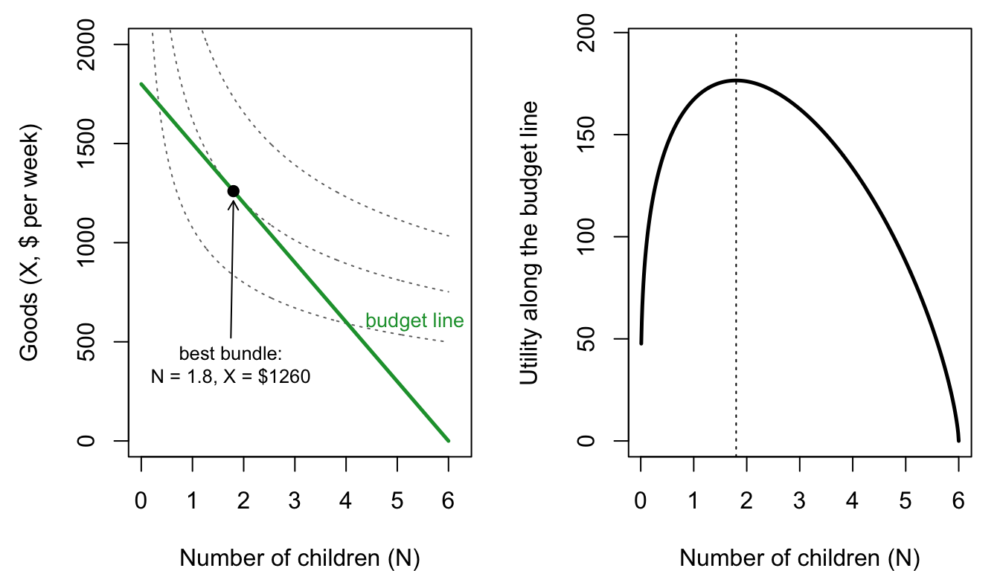

Show the R code
w <- 20; T <- 40; I <- 1000; p <- 200; c <- 5; a <- 0.7
Ns <- N_star(w, T, I, p, c, a); Xs <- X_star(w, T, I, p, c, a)
Us <- util(Xs, Ns, a)
N <- seq(0.01, 6, 0.01)
op <- par(mfrow = c(1, 2), mar = c(4, 4.5, 1, 1))
plot(N, 1800 - 300 * N, type = "n", ylim = c(0, 2000), xlim = c(0, 6.2),
xlab = "Number of children (N)", ylab = "Goods (X, $ per week)")
for (Ui in Us * c(0.75, 1, 1.25))
lines(N, X_on_U(Ui, N, a), lty = 3, col = col_grey)
segments(0, 1800, 6, 0, col = col_goods, lwd = 2.5)
points(Ns, Xs, pch = 19)
arrows(1.75, 520, Ns, Xs - 50, length = 0.07)
text(1.75, 520, sprintf("best bundle:\nN = %.1f, X = $%.0f", Ns, Xs), pos = 1, cex = 0.8)
text(4.1, 600, "budget line", col = col_goods, pos = 4, cex = 0.85)
Ub <- util(1800 - 300 * N, N, a)
plot(N, Ub, type = "l", lwd = 2.5, ylim = c(0, max(Ub) * 1.1),
xlab = "Number of children (N)", ylab = "Utility along the budget line")
abline(v = Ns, lty = 3)
par(op)